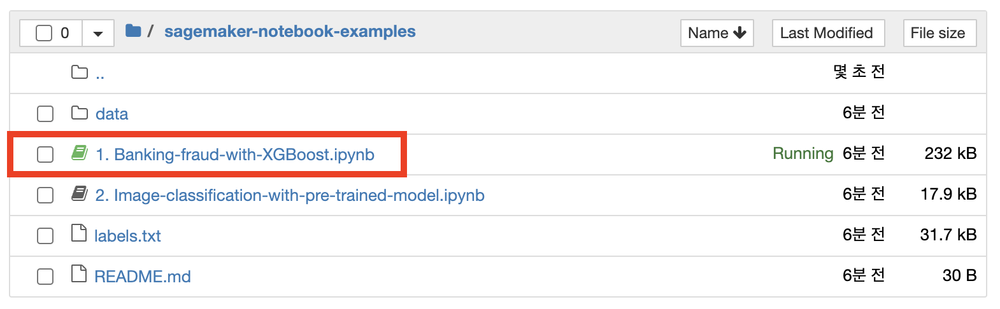

Built-in 알고리즘 사용하기
본 실습에서는 Built-in 알고리즘은 XGBoost를 이용해 은행 사기 탐지 모델을 train, tune 그리고 deploy를 합니다.
S3 bucket 이름 복사
banking_fraud.csv 파일을 업로드 한 S3 bucket 이름을 복사합니다.
Jupyter notebook 실행하기
-
sagemaker-notebook-examples 폴더 > 1. Banking-fraud-with-XGBoost.ipynb을 클릭합니다. 
-
4번째 셀에 앞서 복사한 S3 bucket 이름 과 학번을 입력합니다.
- 예시:
- student_number = ‘2021000000’
- bucket = ‘sagemaker-000000000000’

-
Jupyter notebook에서 Shift+Enter로 모든 셀을 실행합니다. Endpoint을 생성하는 Hosting 부분은 8-10 분 정도 소요됩니다.
-
Hosting이 완료되면 추론을 통해 모델의 성능을 확인합니다.
-
마지막 셀의 주석처리를 제거하여 Endpoint를 삭제합니다.
Important: Hosting을 수행하셨다면, Endpoint를 꼭 삭제해 추가적인 과금이 발생하지 않도록 합니다.
© 2021 Amazon Web Services, Inc. 또는 자회사, All rights reserved.